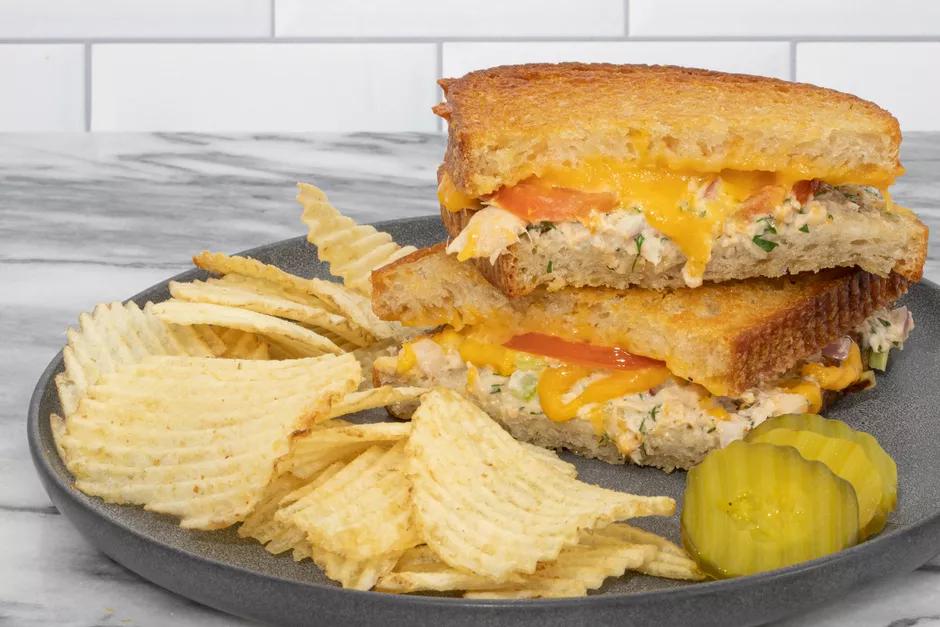

Tuna Melt Sandwich

The tuna melt is an American classic, and there are nearly as many ways to make it as there are American families. This recipe is for closed tuna melt skillet sandwiches, but you could certainly change it up and make paninis or baked open-face sandwiches.
The ingredients are adaptable as well. Use your favorite melting cheese and feel free to change the tuna salad ingredients. Omit the onion or replace it with minced bell pepper or more celery. Instead of sliced tomato, top it off with slices of roasted red pepper. The bread is easy—use what you like. You could even assemble your tuna sandwiches on savory slices of French toast!
Ingredients
- 10 ounces tuna (two 5-ounce cans)
- 1/3 cup mayonnaise
- 1 teaspoon Dijon mustard
- 3 tablespoons finely chopped red onion
- 3 tablespoons finely chopped celery
- 3 tablespoons chopped parsley
- 1 tablespoon lemon juice (or pickle juice)
- 1 tablespoon chopped fresh dill, optional
- 1/8 teaspoon ground black pepper
- 1 large tomato (thinly sliced, 8 slices)
- 6 ounces shredded cheddar cheese (1 1/2 cups, or about 8 thin slices of cheddar or American cheese)
- 8 slices bread
- 3 tablespoons butter (softened)
Steps
- Drain the tuna and transfer it to a medium bowl.
- Add the mayonnaise, Dijon mustard, red onion, celery, parsley, lemon juice, dill (if using), and pepper to the tuna, stirring until well blended.
- Spread the tuna mixture onto a slice of bread. Top with 2 slices of tomato and about 1/4 cup of the cheese (or 1 to 2 slices).
- Place another slice of bread on top of the cheese layer and carefully spread about 1 teaspoon of the butter over top. Repeat with the remaining bread, tuna, tomato slices, and cheese.
- Heat a skillet over medium. Place 1 or 2 sandwiches in the pan, buttered side down. Butter the top piece of bread and cook for about 4 to 6 minutes or until the bottom is golden brown. Carefully turn the sandwich over and continue to cook for 4 or 5 minutes to brown the other side. Repeat with the remaining sandwiches.
- Slice the sandwiches and serve with potato chips or fries and dill pickle slices.